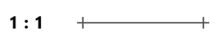
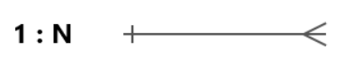
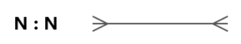

Entity Relationship Diagram (ERD) on graafiline esitus, mis näitab, kuidas entiteedid, näiteks inimesed, objektid või mõisted, on süsteemis omavahel seotud.
ERD-sid kasutatakse tavaliselt andmebaaside kujundamisel entiteetide ja nende atribuutide vaheliste seoste visualiseerimiseks.
Olemitabel esindab reaalset objekti (nt Kasutaja, Toode, Tellimus).
Tabelis peab/saab olema:
Võtmed on kriitilised andmete terviklikkuse tagamiseks
| Võtme tüüp | Selgitus |
|---|---|
| Primary Key (PK) | Esmaseks võtmeks on unikaalne tunnus, mis ei kordu kunagi (nt Isikukood või ID). |
| Foreign Key (FK) | Välisvõti, mis viitab teise tabeli PK-le, luues nendevahelise seose. |
| Composite Key | Liitvõti, mis koosneb kahest või enamast väljast, et tagada unikaalsus. |
| Key (Võti) | Üldine termin suvalise välja kohta, mida kasutatakse andmete otsimiseks. |
Seosed näitavad, kui palju ühe tabeli kirjeid saab olla seotud teise tabeli kirjetega.
1:1 (Üks ühele): Üks inimene saab omada ühte passi.

1:N (Üks mitmele): Ühel kliendil võib olla mitu tellimust.

N:N (Mitu mitmele): Mitmel õpilasel saab olla mitu erinevat kursust.

Kui meil on tabel "Kliendid" (PK: KlientID) ja tabel "Tellimused", siis seose loomiseks
lisame "Tellimused" tabelisse välja "KlientID", mis on seal Foreign Key (FK).
Nii teab andmebaas täpselt, milline tellimus kuulub millisele kliendile.